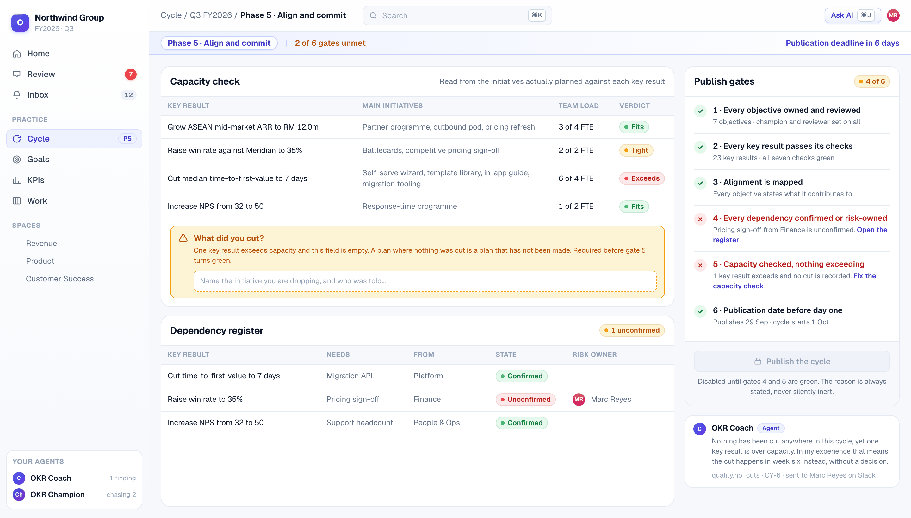

The publish control states its reason, never sits silently inert
S-10
Two gates are red. Capacity exceeds on one key result with nothing recorded as cut, and a dependency on Finance is unconfirmed. The Coach names the consequence rather than just the rule.

THE PRODUCT
18